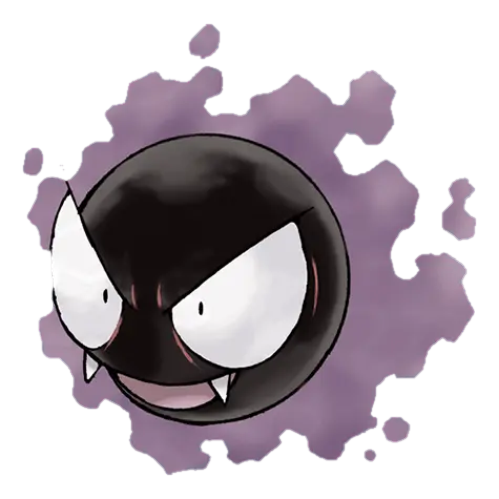

Ghost Type Pokemon
- Description: Ghost-type Pokémon are associated with the supernatural, often featuring eerie designs and moves related to spooky or psychic abilities.
- Strength: Ghost types are effective against Psychic and other Ghost types, using their mysterious powers to overcome the mind or ethereal entities.
- Weakness: They are, however, vulnerable to Dark and other Ghost types, creating a complex interplay of supernatural strengths and weaknesses.
- Best Starter Pokémon: While Ghost types are not typically starters, some Pokémon, like Gastly, offering unique and unpredictable abilities.
